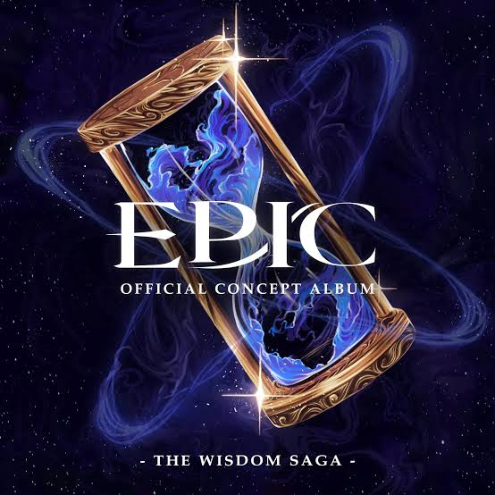

Sept ans plus tard, à Ithaque, Télémaque, le fils d'Ulysse a maintenant vingt ans et aspire à devenir un héros légendaire comme son père, en espérant ainsi pouvoir protéger sa mère, Pénélope, de ses prétendants de plus en plus violents (Legendary).
Pour défendre l'honneur de sa mère il tient tête au prétendant Antinoüs, mais il est sévèrement battu lors de la confrontation avant qu'Athéna n'apparaisse et ne lui vienne en aide (Little Wolf).
Lorsque Télémaque demande à Athéna pourquoi elle l'a aidé, elle évoque sa relation avec Ulysse et ses regrets quant à leur dispute et leur séparation. Télémaque, ignorant qu'elle fait référence à son père, encourage la déesse à tendre la main à son vieil ami et à renouer leur relation (We'll Be Fine).
Athéna décide de consulter les souvenirs d'Ulysse pour découvrir ce qui lui est arrivé depuis leur séparation, et découvre qu'il a été piégé sur l'île d'Ogygie par la déesse Calypso, qui depuis tente sans relâche de séduire Ulysse. Au fil des ans, Ulysse est devenu de plus en plus désespéré et désireux de s'échapper de l'île, étant même prêt à sauter d’une falaise pour ne plus être hanté par les fantômes de ses amis morts (Love in Paradise).
Sur le mont Olympe, Athéna demande à son père, Zeus, de libérer Ulysse, Zeus lui propose un pari. Il organise une rencontre où Athéna devra convaincre cinq autres dieux de l'Olympe — Apollon, Héphaïstos, Aphrodite, Arès et Héra — qu'Ulysse mérite d'être libéré, Zeus acceptera de le relâcher s'ils sont tous convaincus. Athéna utilise son esprit et sa sagesse pour convaincre les autres dieux. Victorieuse, elle demande à Zeus de respecter sa part du marché. Irrité, il attaque Athéna avec sa foudre l'accusant de l'avoir ridiculisé, mais la déesse survit et plaide à nouveau pour la liberté d'Ulysse (God Games).